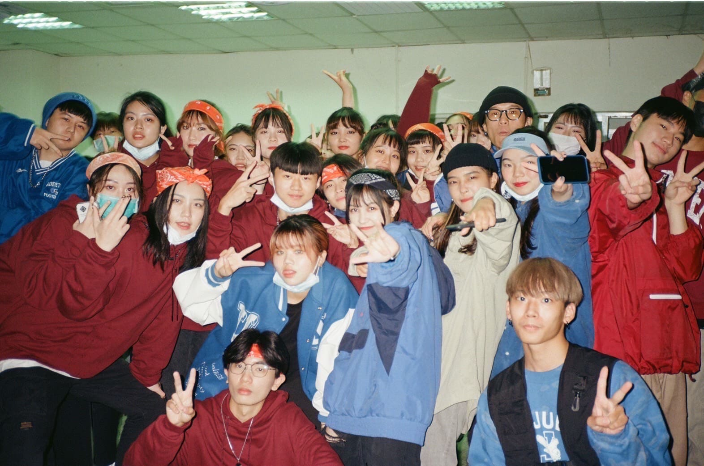
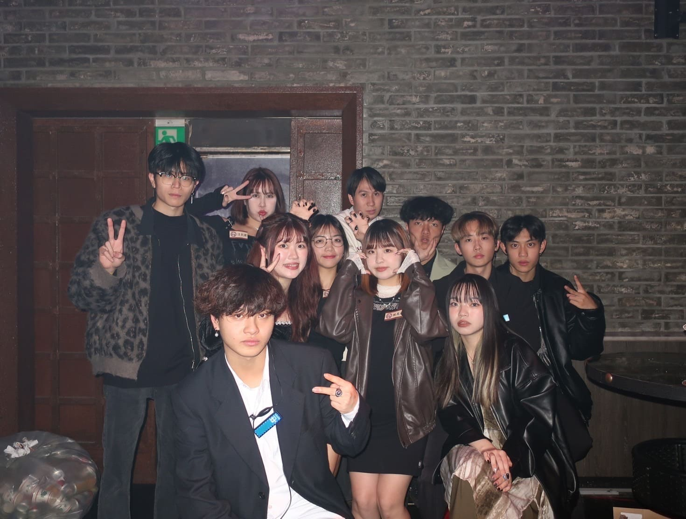
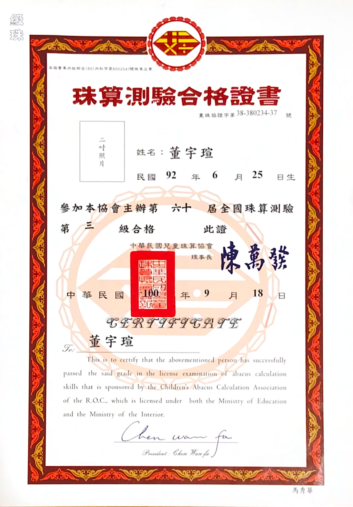
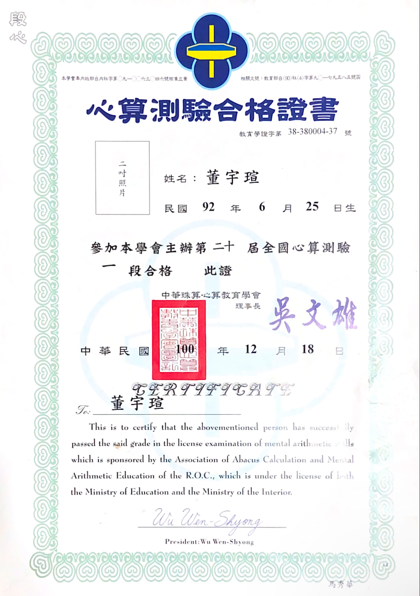

基本資料
性別：女
就讀：中原大學資訊管理學系
個性：隨和
興趣：唱歌、跳舞、看動漫
優點：能吃苦
缺點：拖延症
社團經歷
大一：嘻研社社員
嘻研社是一個表演性質的社團，用肢體與音樂將表演者的情緒傳達給觀眾。加入嘻研社後，我自信了很多，敢於在舞台上展現自己，也會為了呈現更好的演出而提出意見，除了表演之外，我嘗試參加比賽，享受比賽的過程並漸漸相信自己的能力，不畏懼他人的眼光。我認為，對於一個成功的人而言，自信是一項必不可少的特質，自信心的增加使我面對問題或困難時能更從容的去應對。
大二：嘻研社教學
升上大二後，我接下了嘻研社教學的位置，除了平常社課要帶領大家練習基礎之外，還得將一支舞從無到有，其中，與社員良好的溝通也十分重要，這個職位讓我充分練習到如何與人溝通。

大三：土木系學會執秘
莫名其妙被拉入系學會充人數，但責任心作祟，還是幫忙辦理了很多活動，像是耶誕舞會、系烤、系出遊等，也因為這些活動認識了很多不同科系的朋友，是很特別的經歷。
特殊經歷
宜蘭縣第八屆Scratch競賽國中動畫組 特優
國中電腦課時初次接觸程式語言，由於繳交作業的情況良好，老師詢問我是否有意願代表學校參加比賽，我認為學校程式語言有助於培養邏輯思考的能力，便接受了老師的建議，經過培訓後，相繼獲得兩年特優及優等的佳績。
2018宜蘭縣童玩節擔任親善大使
童玩節是宜蘭每年暑假的重要活動，會邀請世界各地的表演團體前來演出，親善大使則需要接待各團體，我當時負責的是泰國，第一次跟外國人長時間接觸，才發現學好英語真的很重要，但我們並沒有因為語言不通而關係尷尬，反而用肢體代替言語表達對彼此的關懷與喜愛。
證書
全國珠心算測驗 段位合格
 我從幼稚園開始接觸珠心算，比大部分同齡人還早接觸四則運算之外，計算能力也較為優秀。在學習珠心算的過程中，快速且細心的計算是最基本的，為了通過測驗，我每天都會認真練習、訂正，而這項技能成為了我學習路上有利的工具之一。
打工經歷
早餐店內外場
這是我第一份打工，雖然都要早起很累，但是靠自己雙手賺到錢的感覺很好！
統一超商工讀生
在超商工讀時，我首次接觸POS系統操作與庫存管理，學習到新的技能，也提升了臨場反應與顧客服務能力。
慕里諾餐飲股份有限公司 內外場
我在這間公司旗下的杏桃鬆餅屋工作，由於在百貨公司內，客流量大，學到了如何在高壓環境下維持團隊合作與溝通，且對餐飲流程有了深入了解。
酒吧工讀生
在酒吧的經驗培養了我的應變能力與溝通技巧，並學習了基本的調酒知識，也結交了許多來自不同領域的朋友。
哈皮樂園工讀生
在哈皮樂園工作中，我擔任教導小朋友製作史萊姆與擠奶油膠的老師，在這裡學習到如何與不同年齡層的顧客互動，也提升了我的耐心與親和力。